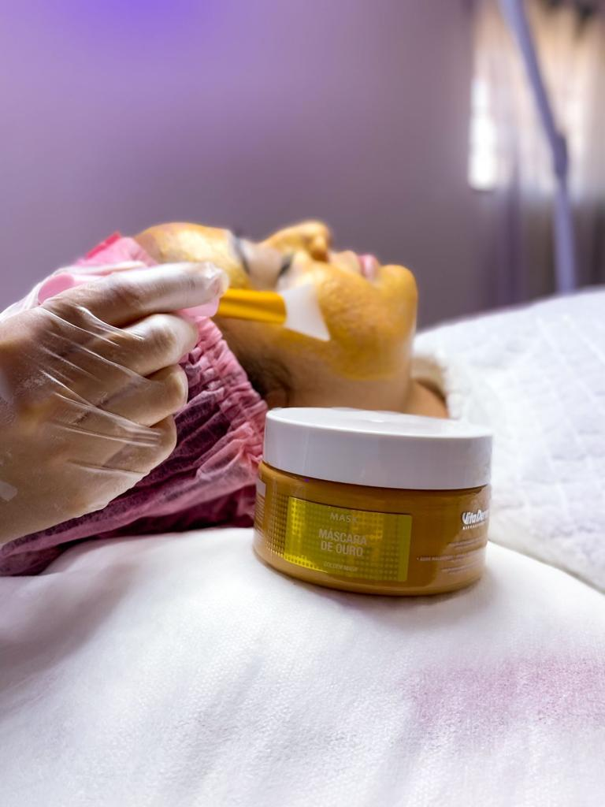

Procedimentos faciais
Hidratação facial
Deixa a pele maisiluminada e vistosa, , menos ressecada, protege contra poluição do dia a dia, evita o envelhecimento precoce, previne manchas, controle do brilho e oleosidade.


